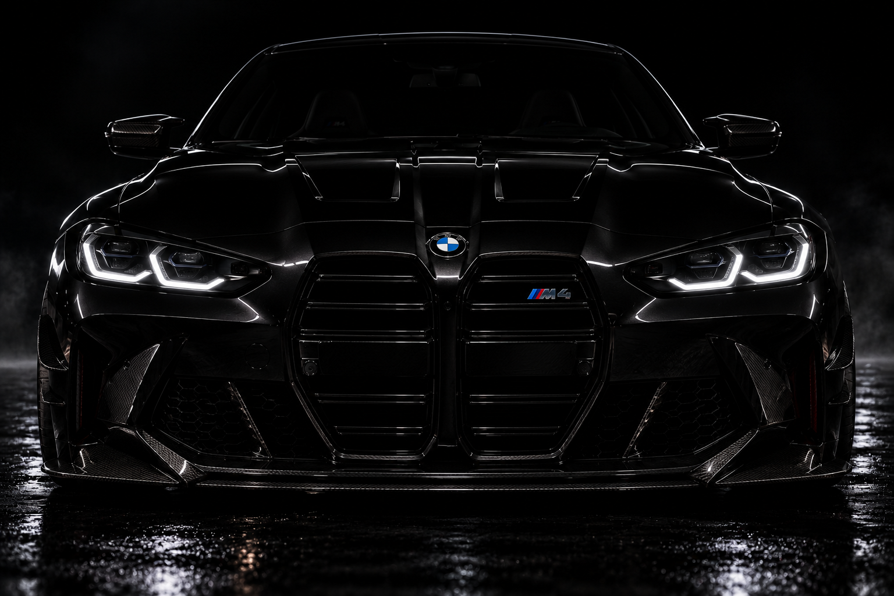

Performance • Tuning • High Flow Filters
FIND YOUR FILTER
اختار مركبتك واعثر على الفلتر المناسب
حدد نوع المركبة وموديلها لعرض الفلاتر المسجلة والمتوافقة حسب بيانات الكتالوج.
مختارات من المتجر
خدمات Extreme Car
Remap
Pops & Bangs
برمجة صوت وأداء رياضي للسيارات المدعومة.
DSG Tuning
تعديل برمجة ناقل الحركة وتحسين الاستجابة.
Dyno Test
فحص وقياس القوة والعزم قبل وبعد التعديل.
فحص وتشخيص
تشخيص إلكتروني وفحص أنظمة السيارة.